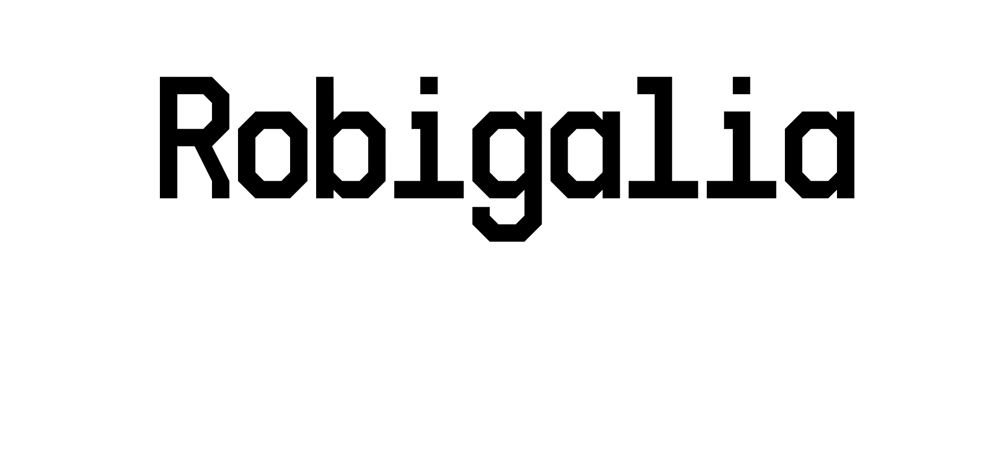

Library Documentation:
- postgres - A native PostgreSQL driver for Rust
- http - Rust HTTP library (server and client)
- noise - Procedural noise generation library for Rust
- sqlite - SQLite3 Bindings for Rust
- sax - Wrapper for libxml2's SAX parser
- color - A library that provides types and conversions for working with various color formats
- cgmath - A linear algebra and mathematics library for computer graphics
- gl - An OpenGL function pointer loader
- glfw - GLFW3 bindings and wrapper
- encoding - Character encoding support for Rust
- ssl - OpenSSL bindings